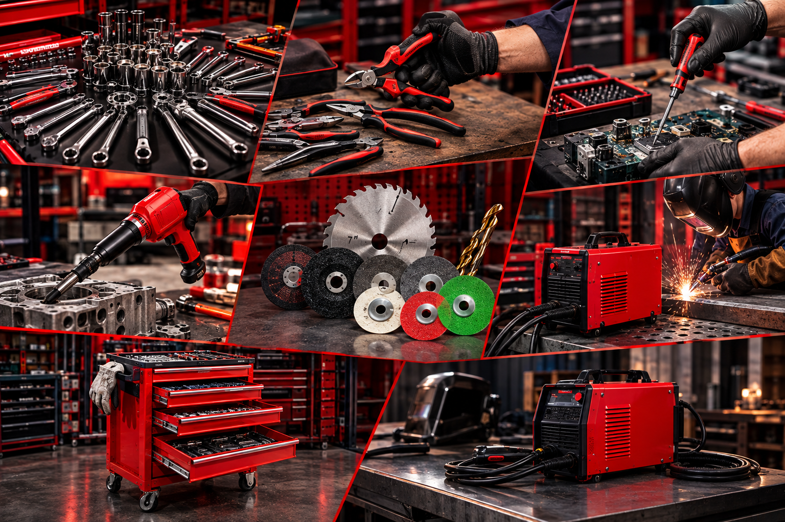

KATEGORI PILIHAN
Menyediakan beragam produk perkakas dan alat-alat teknik berkualitas tinggi dengan harga yang kompetitif. Mengembangkan produk yang inovatif dan relevan dengan kebutuhan pasar, didukung oleh teknologi terkini.
 19 Part
19 Part
AIR TOOLS
COMPRESSOR, AIR COCK VALVE, AIR IMPACT WRENCH, SAND BLASTER, AIR NAILER GUN, PISTON AIR NAILER, SPRAYGUN.
BUKA KATALOG 16 Part
16 Part
PNEUMATIC
RECOIL HOSE PU, AIR HOSE COMPRESSOR, TIRE PIPE AIR HOSE, AIR HOSE PVC NYLON, AIR FILTER, AIR QUICK.
BUKA KATALOG 59 Part
59 Part
AUTOMOTIVE
DONGKRAK, ALAS KERJA MEKANIK, POMPA ANGIN, ALAT PENGUKUR TEKANAN ANGIN, POMPA TANGAN, DLL.
BUKA KATALOG
100+ PartACCESSORIES & HAND TOOLS
KUNCI RING PAS, KUNCI L, TANG, OBENG, MATA GERINDA, MATA BOR, SOLDER, PALU, MESIN PEMOTONG BESI, GERINDA, DLL.
BUKA KATALOGPRODUK POPULER
 TERLARIS
AB8-600FW
TERLARIS
AB8-600FW
YUKIDO CORDLESS IMPACT WRENCH 600Nm
Mesin pembuka baut tanpa kabel dengan torsi maksimal 600 Nm, cocok untuk membantu pekerjaan otomotif dan perbengkelan. Dilengkapi baterai lithium-ion 48V serta berbagai aksesori soket untuk memudahkan proses melepas dan mengencangkan baut secara praktis dan efisien.
 REKOMENDASI
AB0910B
REKOMENDASI
AB0910B
YUKIDO ANGLE GRINDER
Mesin gerinda 4 inci dengan daya 540W yang cocok untuk memotong, menghaluskan, dan merapikan berbagai material. Memiliki desain praktis dan ergonomis sehingga nyaman digunakan untuk pekerjaan bengkel, konstruksi, maupun kebutuhan sehari-hari dan Ideal untuk membantu pekerjaan.
 PERFORMA TINGGI
JET-80FW
PERFORMA TINGGI
JET-80FW
YUKIDO HIGH PREASSURE WHASER JET80
Mesin cuci bertekanan tinggi JET80 yang cocok untuk membersihkan kendaraan bermotor, peralatan, dan berbagai permukaan dari kotoran membandel. Dilengkapi motor 500W dengan tekanan hingga 80 bar serta aksesori selang dan spray gun untuk mendukung proses pencucian yang praktis dan efisien.
 AB-038T
AB-038T
YUKIDO HYDRAULIC FLOOR JACK HD
Dongkrak buaya hidrolik berkapasitas 3 ton yang cocok untuk mengangkat kendaraan saat melakukan perawatan atau perbaikan. Dilengkapi katup pengaman, roda yang tahan lama, dan gagang putar 360° untuk memudahkan penggunaan di bengkel maupun kebutuhan otomotif.
4 STANDAR KUALITAS YUKIDO
Dibuat dengan standar manufaktur ketat untuk memastikan tidak ada celah kegagalan komponen di kecepatan tinggi.
MATERIAL STANDAR BALAP GRADE 6061-T6 CNC
Billet aluminium berkekuatan tarik tinggi diproses mesin 5-axis otomatis menghasilkan bobot minimal dengan kekakuan struktural maksimum.
TOLERANSI 0.02 MIKRONSPESIFIKASI & UJI TRANSPARAN
Setiap batch suku cadang menjalani pengujian dynamometer, uji siklus lelah hidrolik 500.000 kali, dan laporan dyno publik.
DATA DYNO TERBUKAJAMINAN GARANSI RESPONSIF 1X24 JAM
Layanan purna jual anti-ribet. Ganti unit baru jika cacat produksi tanpa abu rumit, terintegrasi langsung dengan portal klaim.
ONE-TO-ONE REPLACEMENTDUKUNGAN RISET TIM BALAP & AHM
Pengembangan berbasis data sirkuit riil dari tim balap nasional yang didukung sinergi teknis standar performa Astra Honda Motor.
R&D SIRKUIT SENTUL & MANDALIKA
YUKIDO FACTORY RACING DIVISION
Mendominasi podium kelas Bebek 150cc Tune-up & Sport 150cc
DARI SIRKUIT ONEPRIX HINGGA KE JALAN RAYA
Komponen YUKIDO bukan sekadar aksesoris pajangan kosmetik. Part kami adalah hasil tempaan keras dari pertarungan sirkuit Kejurda dan Kejurnas Oneprix. Setiap inovasi aerodinamika, rasio kompresi kaliper, dan compound kampas rem dikembangkan bersama mekanik kawakan dan mengacu pada standar toleransi mekanik Astra Honda Motor (AHM).
Uji Takan 20 Lap Non-Stop
Zero-fade brake technology menjaga gigitan piringan rem stabil tanpa penurunan daya cengkeram di putaran lap terakhir.
Validasi Spesifikasi AHM
Kesesuaian mounting mesin dan rasio hidrolis kompatibel dengan sasis balap Honda Sonic 155R & CBR150R tanpa modifikasi liar.
PT YUKIDO POWER TEKNIK
Layanan pemasangan mekanik profesional, dyno test tuning, dan pembelian part langsung dengan inspeksi visual.